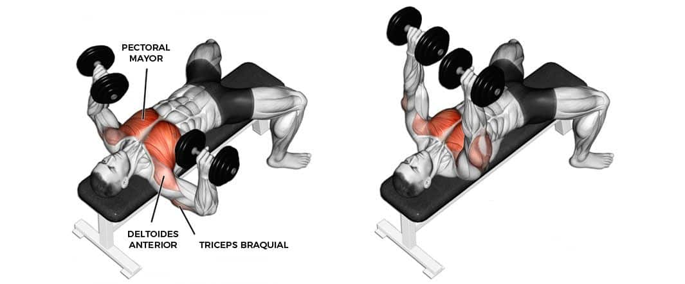
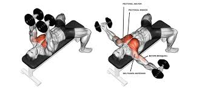
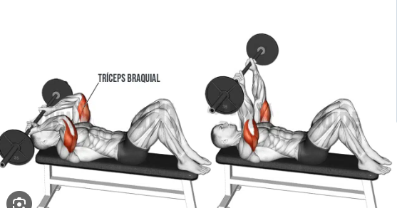
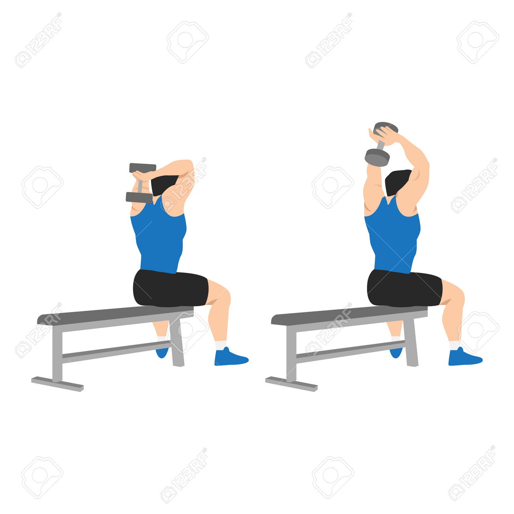
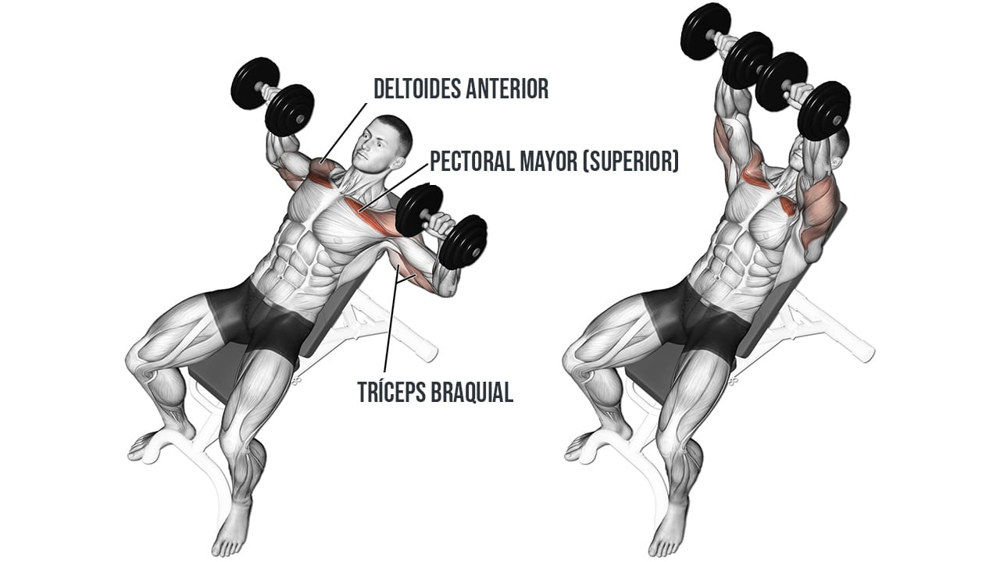
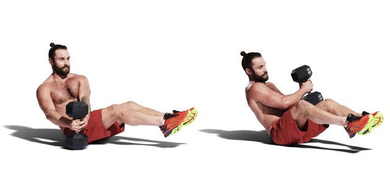
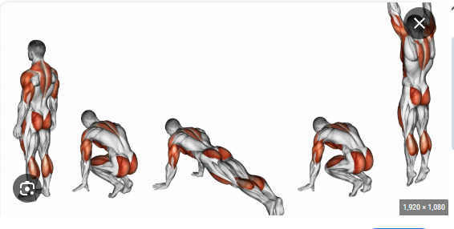
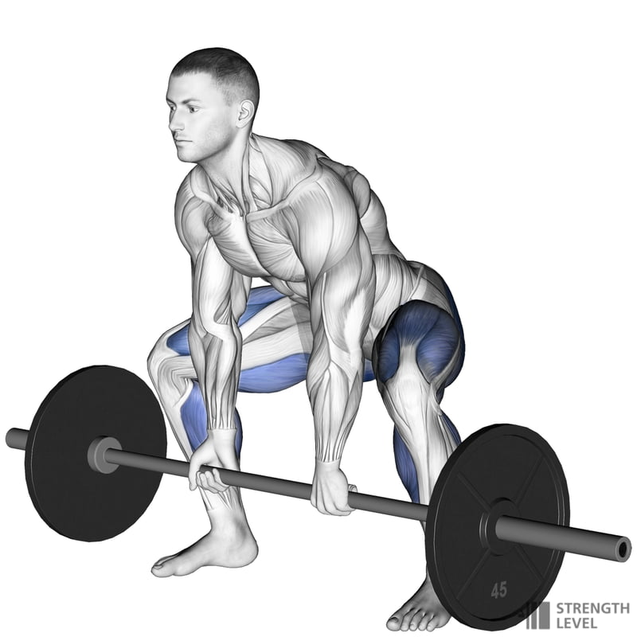
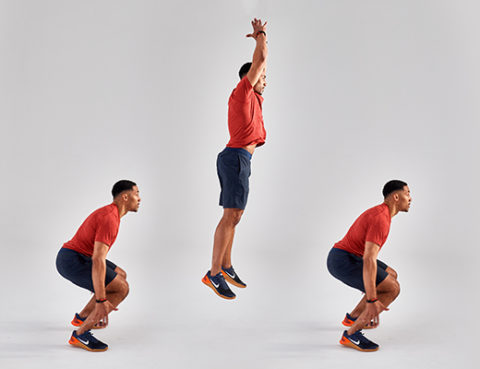

Dia 1 Pecho y Tríceps + Cardio
Calentamiento: Saltos de tijera y movilidad dinámica (10 min).
Circuito:
- Press de banca con mancuernas/barra - 4x12. 
- Aperturas con mancuernas - 4x12. 
- Press francés con mancuernas o barra - 3x12-15. 
- Extensiones de tríceps con mancuerna (por encima de la cabeza) - 3x12 
- Press inclinado con mancuernas - 3x12. 
Cardio HIIT (10-15 min): 30 segundos de sprint/trote intenso + 1 minuto de trote suave o descanso activo.
Estiramientos: Isquiotibiales, cuádriceps, y pecho (20-30 segundos cada uno).
- Estiramiento de isquiotibiales:Siéntate con las piernas extendidas, inclina el torso hacia adelante y toca los pies. Mantén por 20-30 segundos.
- Estiramiento de pecho: Coloca los brazos en un marco de puerta y empuja suavemente el torso hacia adelante para abrir el pecho. Mantén 20-30 segundos.
- Estiramiento de espalda: Siéntate sobre los talones y lleva los brazos hacia adelante (postura del niño). Mantén 30 segundos.
Día 2: Tren Superior + Core
Calentamiento: Movilidad de hombros y saltos suaves (5 min).
Fuerza:
- Press militar con barra - 10 repeticiones
- Remo inclinado con barra - 12 repeticiones
- Press de Pecho con Mancuernas:Realiza de 10 a 12 repeticiones.
- Plancha con toque de hombro - 30 segundos


Estiramientos: Hombros, tríceps y espalda alta (20-30 segundos cada uno).
- Estiramiento de hombros: Cruza un brazo frente al cuerpo y sujeta con la otra mano. Mantén 20-30 segundos por brazo.
- Estiramiento de tríceps: Lleva un brazo detrás de la cabeza y empuja el codo hacia abajo con la mano contraria. Mantén 20-30 segundos.
- Estiramiento de espalda alta: Coloca las manos juntas frente al pecho y empuja los omóplatos hacia afuera. Mantén 20-30 segundos.
- Estiramiento de oblicuos: De pie, inclina el torso hacia un lado con el brazo extendido por encima de la cabeza. Mantén 20-30 segundos por lado.
Día 3: Descanso Activo
Caminar a ritmo moderado (30-40 min) o realizar yoga.
Estiramientos: Cadera, isquiotibiales, y postura del niño (20-30 segundos cada uno).
Día 4: Tren Inferior + Core
Calentamiento: Trote ligero o bicicleta (5 min).
Fuerza:
- Sentadilla frontal con barra - 10 repeticiones
- Peso muerto rumano - 12 repeticiones
- Sentadillas con mancuernas - 12 repeticiones
- Elevación de talones con peso - 15 repeticiones
-
Puente de glúteos con mancuerna- 15 repeticiones

-
Russian Twist con Mancuerna- 20 repeticiones



Estiramientos: Cuádriceps, glúteos y aductores (20-30 segundos cada uno).


Full Body + Cardio
Calentamiento: Trote ligero o jumping jacks (5-10 min).
Ejercicios principales:
- Burpees - 3x10-12. 
- Clean and press (levantamiento y press con barra) - 4x10.
- Peso muerto sumo con barra o mancuernas 
- Sentadillas con salto - 3x12. 
- Mountain climbers - 3x15-20.


Cardio HIIT (15 min): Alterna 1 min de ejercicio intenso (sprint, saltos) con 1 min de descanso activo.